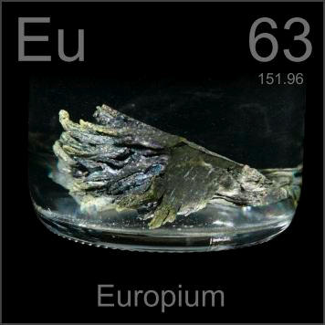

HOME
PREVIOUS
NEXT

Europium
Atomic Weight: 151.964
Density: 5.244 g/cm3
Melting Point: 822 °C
Boiling Point: 1527 °C
Europium compounds are widely used in phosphors for cathode ray TV screens and in compact fluorescent bulbs. Pure crystals like this are useful only as a source of europium to be turned into compounds.